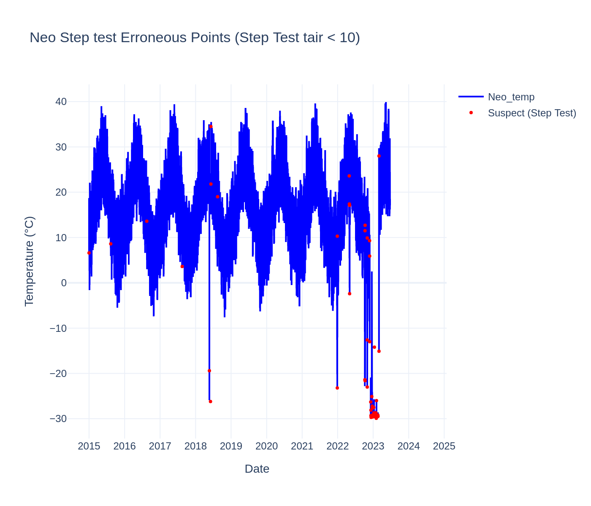
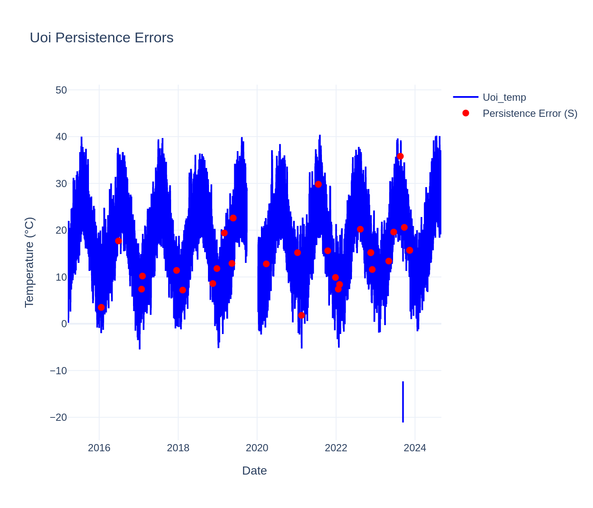

Temperature Plots raw data
Nan points = 2547 or 3.07%
Nan points = 823 or 0.99%
Nan points = 30 or 0.03%
Nan points = 8664 or 10.44%
Nan points = 866 or 1.04%
 Nan points = 2547 or 3.07%
Nan points = 2547 or 3.07%
Gross test errors
0 erros or 0%
 0 erros or 0%
0 erros or 0%
19 erros or 0.02%
2547 erros or 3.06%
0 erros or 0%
0 erros or 0%
STEP TEST Tair< 10
-This test is sensitive to NaN and compute the as Erroneous (not shown at plot).
-Also this method compute as Erroneous first and last point.
 20 erros or 0.025%
20 erros or 0.025%
6 erros or 0.007%
54 erros or 0.065%
 51 erros or 0.061%
16 erros or 0.018%
16 erros or 0.018%
STEP TEST Tair< 4
-This test is sensitive to NaN and compute the as Erroneous (not shown at plot).
2387 suspects or 2.88%
 1722 suspects or 2.08%
1722 suspects or 2.08%
3049 suspects or 3.7%
2870 suspects or 3.45%
4766 suspects or 5.44%
3073 suspects or 3.69%
Persistence TEST
 35 suspects or 0.042%
30 suspects or 0.036%
30 suspects or 0.036%
29 suspects or 0.036%
43 suspects or 0.052%
28 suspects or 0.034%
Internal Consistency TEST Tair>Dew Point
-This test is sensitive to Temp and RH NaN and compute them as Suspects (not shown at plot).
0 suspects or 0%
0 suspects or 0%
4 suspects or 0.005%
0 suspects or 0%
 0 suspects or 0%
0 suspects or 0%
0 suspects or 0%
Spatial Consistency TEST Hubbard et al. (2005)
-This test removes all NaN from all timeseries. Dataframe has no NaN
0 suspects or 0%
1013 suspects or 1.22%
22 suspects or 0.032%
11323 suspects or 13.60%
3095 suspects or 3.72%
9786 suspects or 11.8%